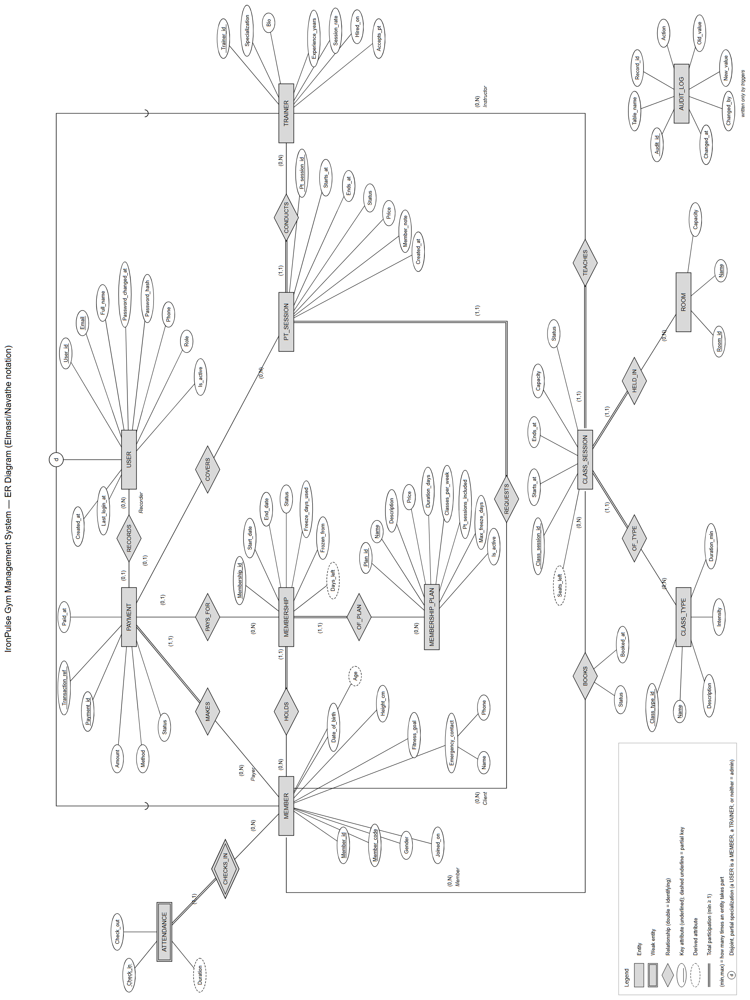
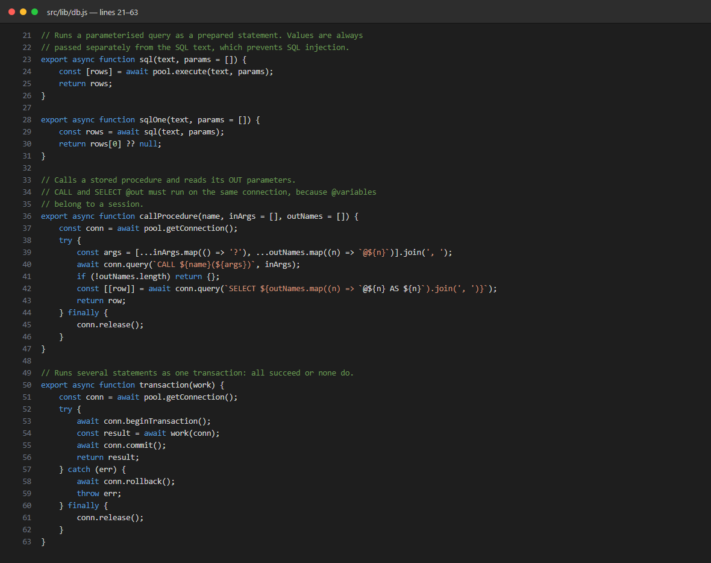
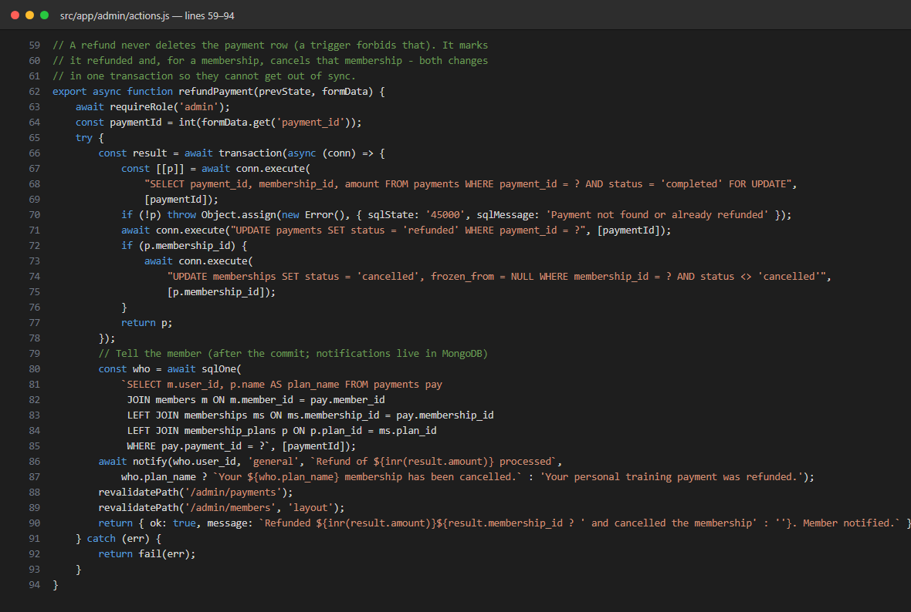
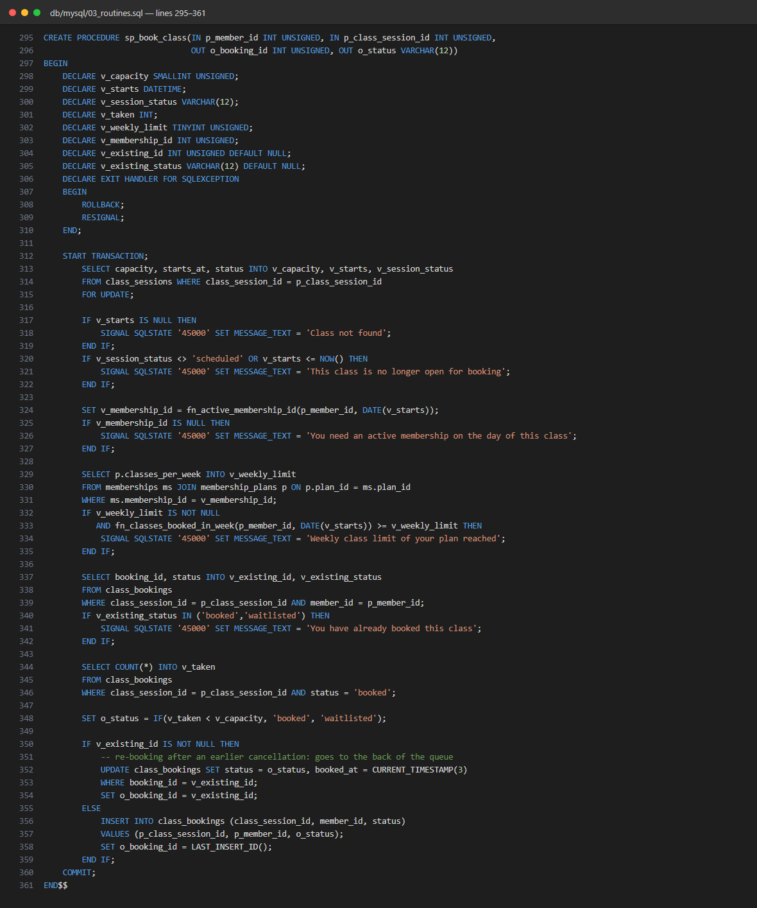
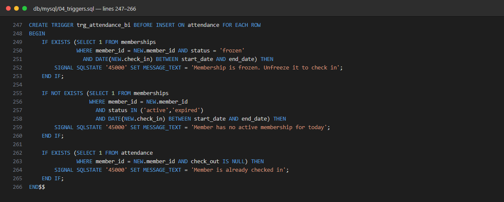
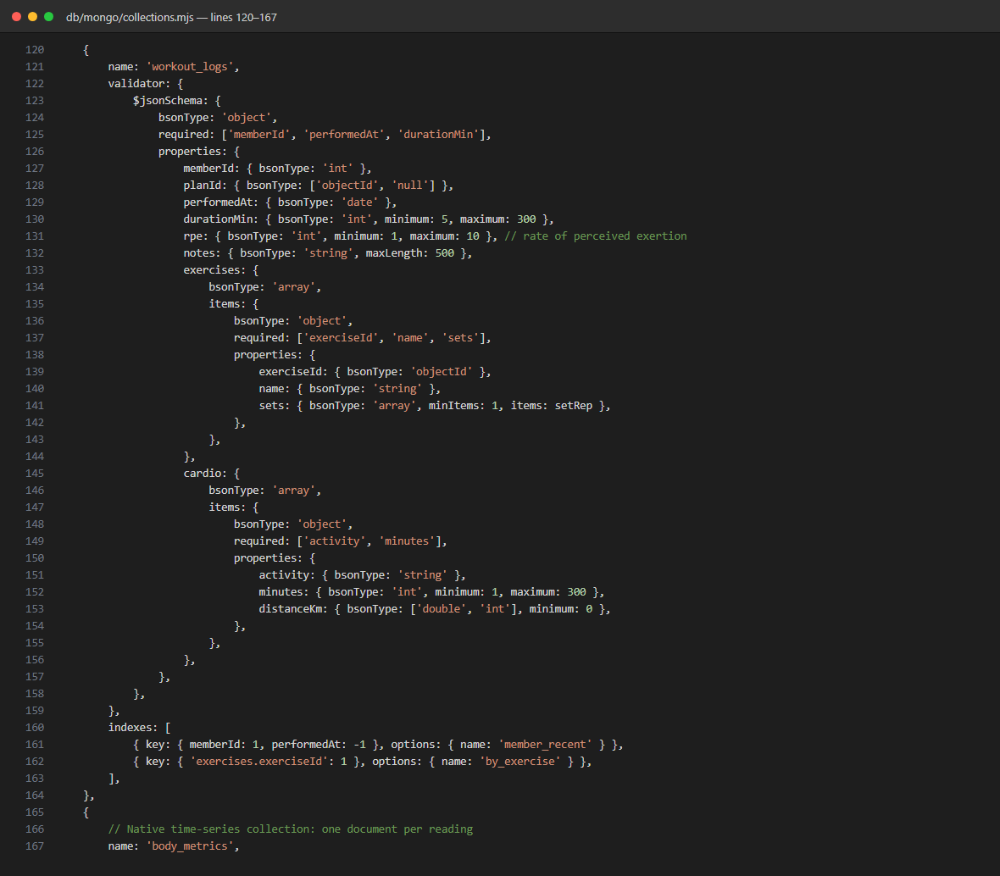
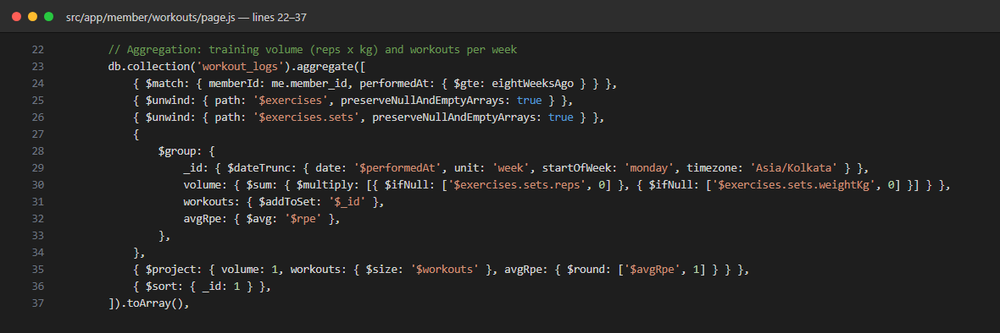
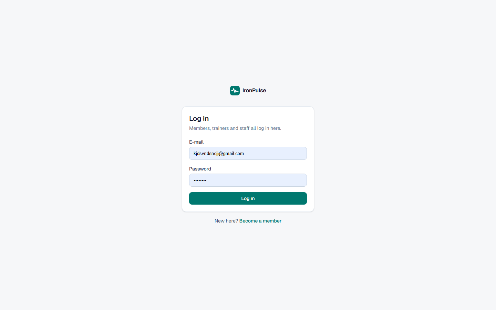
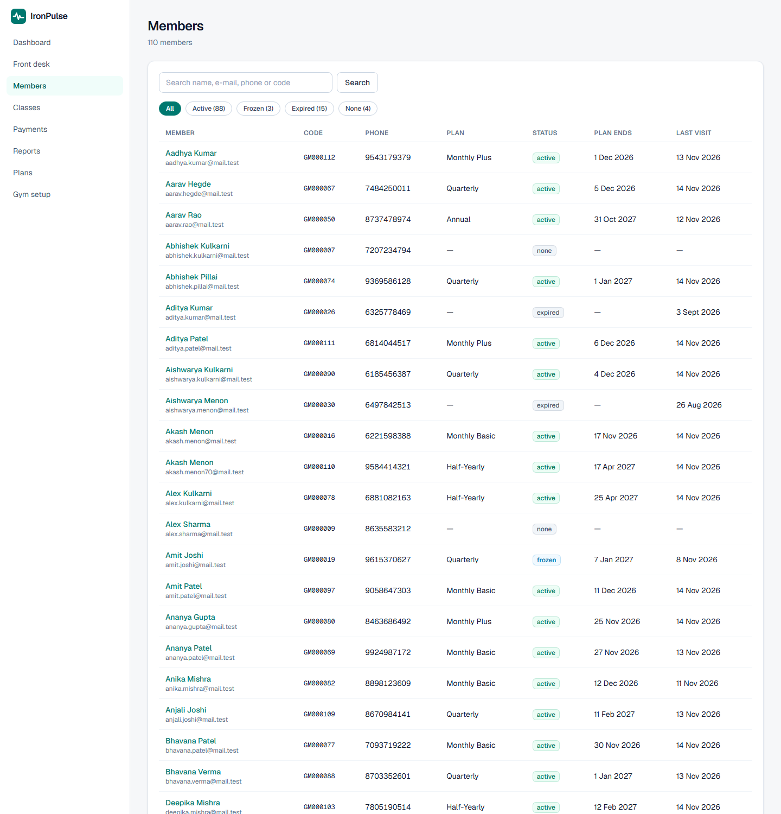
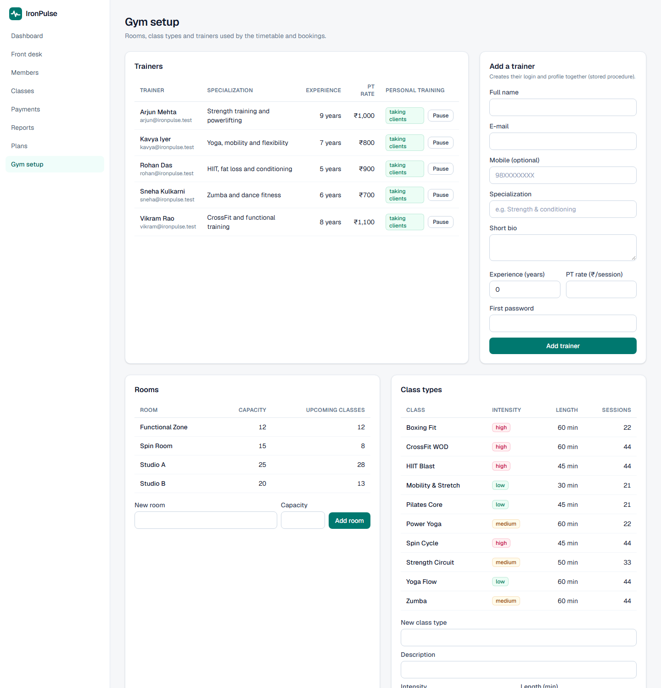

Gym Management System using MySQL, MongoDB and Next.js
Student name
SRN
SUKRUTH ES
PES1UG24CS160
Gagan Eswar
PES1UG24CS165
Course: Database Management Systems · Section C Instructor: Dr. Nagasundari S
Department of Computer Science and Engineering, PES University 17 November 2026
Small and mid-sized gyms still run on registers, spreadsheets and chat groups. As they grow, memberships lapse
unnoticed, popular classes are overbooked while trainers and rooms get double-booked, payments are hard to reconcile and
nobody can tell which members are about to quit. IronPulse is a web-based gym management system that
replaces this with one consistent source of truth for three roles — admin, trainer and member.
The system uses two database paradigms, each for the data it suits. MySQL 8 stores everything
where correctness is critical: users and roles, membership plans and memberships, payments and refunds, group classes
with capacity and waitlists, personal-training sessions and front-desk attendance. The schema has 13 tables,
16 foreign keys, 22 CHECK constraints, 7 views, 4 functions, 13 stored procedures,
18 triggers and 2 scheduled events; business rules such as "no overlapping memberships", "no room or trainer
clash", "the last seat goes to exactly one member" and "payments are never deleted" are enforced inside the database
with constraints, triggers and transactions with row locks. MongoDB 8 stores nested, variable-shape
training data — workout plans, workout logs, an exercise library, a time-series of body measurements and a
self-expiring notification inbox — with $jsonSchema validation, text and TTL indexes and aggregation
pipelines for progress statistics.
A Next.js 16 application provides dashboards, forms, searchable and filterable tables and charts.
It talks to both databases only through a server-side data-access layer using prepared statements and a
least-privilege MySQL account, with bcrypt-hashed passwords and signed session cookies. An automated suite of
55 database test cases (55 passed) and manual end-to-end tests confirm that invalid
operations are rejected by the database and valid ones update all related data together.
Workout plans and logs, exercise library, body metrics (time-series), notifications (TTL)
Web framework
Next.js 16.4.3 (App Router, React Server Components, Server Actions), React 19.3
Pages for the three roles, forms and server-side data access
Language / runtime
JavaScript (ES modules), Node.js 24.11
Application code, setup and seed scripts
Styling
Tailwind CSS 4.3
Responsive layout and components; charts are hand-made SVG
Database drivers
mysql2 3.24 (promise pool, prepared statements), mongodb 7.8 (official driver)
Connecting to MySQL and MongoDB
Security
bcryptjs 3.0 (password hashing), jose 6.2 (signed JWT session cookie)
Authentication and role-based access
Tools
MySQL Workbench, MongoDB Compass, ESLint 9, Git + GitHub, Microsoft Edge (headless, for screenshots and PDF)
Development, inspection, linting, version control, documentation
5. SQL — Database Commands (MySQL)
All commands below are taken from the project files db/mysql/01_schema.sql … 05_events.sql and the
application code. Outputs were produced by running the queries on the demo database as the application account
gym_app.
5.1 Database design
The ER model (Figure 1) has strong entities USER, MEMBER, TRAINER, MEMBERSHIP_PLAN, MEMBERSHIP, PAYMENT, ROOM,
CLASS_TYPE, CLASS_SESSION, PT_SESSION and AUDIT_LOG, the weak entity ATTENDANCE, a disjoint partial specialisation of
USER into MEMBER and TRAINER, and the M:N relationship BOOKS. It maps to 13 tables in third normal form
(Figure 2).

Figure 1: ER diagram (Elmasri/Navathe notation with (min,max) participation)
DROP DATABASE IF EXISTS gym_db;
CREATE DATABASE gym_db CHARACTER SET utf8mb4 COLLATE utf8mb4_0900_ai_ci;
USE gym_db;
CREATE TABLE with PRIMARY KEY, UNIQUE, CHECK (regular expressions) and DEFAULT
CREATE TABLE users (
user_id INT UNSIGNED AUTO_INCREMENT PRIMARY KEY,
email VARCHAR(255) NOT NULL,
password_hash CHAR(60) NOT NULL, -- bcrypt hash, never plain text
role ENUM('admin','trainer','member') NOT NULL,
full_name VARCHAR(100) NOT NULL,
phone CHAR(10) NULL,
is_active BOOLEAN NOT NULL DEFAULT TRUE,
created_at DATETIME NOT NULL DEFAULT CURRENT_TIMESTAMP,
last_login_at DATETIME NULL,
CONSTRAINT uq_users_email UNIQUE (email),
CONSTRAINT uq_users_phone UNIQUE (phone),
CONSTRAINT chk_users_email CHECK (email REGEXP '^[A-Za-z0-9._%+-]+@[A-Za-z0-9.-]+\\.[A-Za-z]{2,}$'),
CONSTRAINT chk_users_phone CHECK (phone REGEXP '^[6-9][0-9]{9}$'),
CONSTRAINT chk_users_name CHECK (CHAR_LENGTH(TRIM(full_name)) >= 2)
);
Subclass table: UNIQUE foreign key to users with ON DELETE CASCADE
CREATE TABLE members (
member_id INT UNSIGNED AUTO_INCREMENT PRIMARY KEY,
user_id INT UNSIGNED NOT NULL,
member_code CHAR(8) NOT NULL, -- printed on the card, used at check-in
date_of_birth DATE NOT NULL, -- minimum age enforced by trigger
gender ENUM('male','female','other') NOT NULL,
height_cm DECIMAL(5,1) NULL,
fitness_goal ENUM('weight_loss','muscle_gain','endurance','flexibility','general_fitness')
NOT NULL DEFAULT 'general_fitness',
emergency_contact_name VARCHAR(100) NULL,
emergency_contact_phone CHAR(10) NULL,
joined_on DATE NOT NULL DEFAULT (CURRENT_DATE),
CONSTRAINT uq_members_user UNIQUE (user_id),
CONSTRAINT uq_members_code UNIQUE (member_code),
CONSTRAINT fk_members_user FOREIGN KEY (user_id) REFERENCES users(user_id) ON DELETE CASCADE,
CONSTRAINT chk_members_code CHECK (member_code REGEXP '^GM[0-9]{6}$'),
CONSTRAINT chk_members_height CHECK (height_cm IS NULL OR height_cm BETWEEN 100 AND 250),
CONSTRAINT chk_members_ephone CHECK (emergency_contact_phone IS NULL OR emergency_contact_phone REGEXP '^[6-9][0-9]{9}$')
);
Payments: two optional foreign keys + CHECK that exactly one is set; indexes
CREATE TABLE payments (
payment_id INT UNSIGNED AUTO_INCREMENT PRIMARY KEY,
member_id INT UNSIGNED NOT NULL,
membership_id INT UNSIGNED NULL,
pt_session_id INT UNSIGNED NULL,
amount DECIMAL(10,2) NOT NULL,
method ENUM('cash','card','upi','netbanking') NOT NULL,
status ENUM('completed','refunded') NOT NULL DEFAULT 'completed',
transaction_ref VARCHAR(40) NOT NULL,
paid_at DATETIME NOT NULL DEFAULT CURRENT_TIMESTAMP,
recorded_by INT UNSIGNED NULL, -- admin user who took the payment
CONSTRAINT uq_payments_ref UNIQUE (transaction_ref),
CONSTRAINT fk_payments_member FOREIGN KEY (member_id) REFERENCES members(member_id),
CONSTRAINT fk_payments_membership FOREIGN KEY (membership_id) REFERENCES memberships(membership_id),
CONSTRAINT fk_payments_pt FOREIGN KEY (pt_session_id) REFERENCES pt_sessions(pt_session_id),
CONSTRAINT fk_payments_recorder FOREIGN KEY (recorded_by) REFERENCES users(user_id),
CONSTRAINT chk_payments_amount CHECK (amount > 0),
CONSTRAINT chk_payments_target CHECK ((membership_id IS NOT NULL) + (pt_session_id IS NOT NULL) = 1),
INDEX idx_payments_paid_at (paid_at),
INDEX idx_payments_member (member_id, paid_at)
);
M:N relationship BOOKS → class_bookings with a composite UNIQUE key
CREATE TABLE class_bookings (
booking_id INT UNSIGNED AUTO_INCREMENT PRIMARY KEY,
class_session_id INT UNSIGNED NOT NULL,
member_id INT UNSIGNED NOT NULL,
status ENUM('booked','waitlisted','cancelled','attended','no_show') NOT NULL,
booked_at DATETIME(3) NOT NULL DEFAULT CURRENT_TIMESTAMP(3),
updated_at DATETIME NOT NULL DEFAULT CURRENT_TIMESTAMP ON UPDATE CURRENT_TIMESTAMP,
CONSTRAINT uq_cb_member_session UNIQUE (class_session_id, member_id),
CONSTRAINT fk_cb_session FOREIGN KEY (class_session_id) REFERENCES class_sessions(class_session_id),
CONSTRAINT fk_cb_member FOREIGN KEY (member_id) REFERENCES members(member_id),
INDEX idx_cb_session_status (class_session_id, status, booked_at),
INDEX idx_cb_member (member_id, status)
);
ALTER TABLE and CREATE / DROP TABLE
ALTER TABLE trainers ADD COLUMN accepts_pt BOOLEAN NOT NULL DEFAULT TRUE AFTER session_rate;
-- v1.2: members can change their password; remember when (set by trg_users_bu)
ALTER TABLE users ADD COLUMN password_changed_at DATETIME NULL AFTER password_hash;
-- v1.1: a scratch table from v1.0 that is no longer needed
CREATE TABLE tmp_import_members (member_code CHAR(8), raw_row TEXT);
DROP TABLE tmp_import_members;
CREATE OR REPLACE VIEW v_class_schedule AS
SELECT cs.class_session_id, cs.starts_at, cs.ends_at, cs.status, cs.capacity,
ct.class_type_id, ct.name AS class_name, ct.intensity,
t.trainer_id, u.full_name AS trainer_name,
r.room_id, r.name AS room_name,
COALESCE(SUM(cb.status IN ('booked','attended','no_show')), 0) AS booked_count,
COALESCE(SUM(cb.status = 'waitlisted'), 0) AS waitlist_count,
cs.capacity - COALESCE(SUM(cb.status IN ('booked','attended','no_show')), 0) AS seats_left
FROM class_sessions cs
JOIN class_types ct ON ct.class_type_id = cs.class_type_id
JOIN trainers t ON t.trainer_id = cs.trainer_id
JOIN users u ON u.user_id = t.user_id
JOIN rooms r ON r.room_id = cs.room_id
LEFT JOIN class_bookings cb ON cb.class_session_id = cs.class_session_id
GROUP BY cs.class_session_id;
await admin.query('CREATE USER IF NOT EXISTS ?@? IDENTIFIED BY ?', [appUser, 'localhost', appPassword]);
await admin.query('ALTER USER ?@? IDENTIFIED BY ?', [appUser, 'localhost', appPassword]);
await admin.query(`GRANT SELECT, INSERT, UPDATE, DELETE, EXECUTE ON \`${database}\`.* TO ?@?`, [appUser, 'localhost']);
Other DDL objects: 31 secondary indexes (including two
FULLTEXT indexes) and 7 views — see the data dictionary in the full documentation.
5.3 DML — INSERT, UPDATE, DELETE
INSERT (from the application; ? = prepared-statement parameters)
-- Admin creates a class (src/app/admin/actions.js); ends_at is filled by trg_class_sessions_bi
INSERT INTO class_sessions (class_type_id, trainer_id, room_id, starts_at, ends_at, capacity)
VALUES (?, ?, ?, ?, NULL, ?);
-- Admin adds a room / a class type (Gym setup page)
INSERT INTO rooms (name, capacity) VALUES (?, ?);
INSERT INTO class_types (name, description, intensity, duration_min) VALUES (?, ?, ?, ?);
UPDATE
-- Refund (src/app/admin/actions.js) - both statements run in ONE transaction
SELECT payment_id, membership_id, amount FROM payments
WHERE payment_id = ? AND status = 'completed' FOR UPDATE;
UPDATE payments SET status = 'refunded' WHERE payment_id = ?;
UPDATE memberships SET status = 'cancelled', frozen_from = NULL
WHERE membership_id = ? AND status <> 'cancelled';
-- Admin switches a plan on/off, member logs in
UPDATE membership_plans SET is_active = NOT is_active WHERE plan_id = ?;
UPDATE users SET last_login_at = NOW() WHERE user_id = ?;
DELETE
-- Payments are never deleted: the BEFORE DELETE trigger refuses it
DELETE FROM payments WHERE payment_id = 1;
-- ERROR 1644 (45000): Payments cannot be deleted; refund them instead
-- Deleting a login account removes its member/trainer profile (FK ... ON DELETE CASCADE)
-- CONSTRAINT fk_members_user FOREIGN KEY (user_id) REFERENCES users(user_id) ON DELETE CASCADE
5.4 SELECT queries — JOIN, GROUP BY, HAVING, ORDER BY, aggregates, subqueries, window functions, full-text
Q1. Revenue per membership plan, last 6 months
Shows: three-table JOIN, WHERE with date arithmetic, GROUP BY, COUNT/SUM, ORDER BY. Used on the admin Reports page (src/app/admin/reports/page.js).
SELECT p.name, COUNT(*) AS sold, SUM(pay.amount) AS revenue
FROM payments pay
JOIN memberships ms ON ms.membership_id = pay.membership_id
JOIN membership_plans p ON p.plan_id = ms.plan_id
WHERE pay.status = 'completed' AND pay.paid_at >= CURRENT_DATE - INTERVAL 6 MONTH
GROUP BY p.plan_id, p.name
ORDER BY revenue DESC;
Output (run as gym_app):
name
sold
revenue
Quarterly
67
435500.00
Monthly Plus
86
215000.00
Half-Yearly
13
149500.00
Monthly Basic
93
139500.00
Summer Shred 2026
8
31992.00
Annual
1
19999.00
Q2. Class popularity — only class types with 5+ finished sessions
Shows: derived table (subquery in FROM), conditional SUM, AVG, NULLIF, GROUP BY + HAVING. Reports page. The derived table counts seats used per session; HAVING filters groups after aggregation.
SELECT ct.name, COUNT(DISTINCT cs.class_session_id) AS sessions,
ROUND(AVG(fill.booked / cs.capacity) * 100, 1) AS avg_fill_pct,
ROUND(SUM(fill.no_show) / NULLIF(SUM(fill.booked), 0) * 100, 1) AS no_show_pct
FROM class_sessions cs
JOIN class_types ct ON ct.class_type_id = cs.class_type_id
JOIN (SELECT class_session_id,
SUM(status IN ('attended','no_show')) AS booked,
SUM(status = 'no_show') AS no_show
FROM class_bookings GROUP BY class_session_id) fill
ON fill.class_session_id = cs.class_session_id
WHERE cs.status = 'completed'
GROUP BY ct.class_type_id, ct.name
HAVING COUNT(DISTINCT cs.class_session_id) >= 5
ORDER BY avg_fill_pct DESC;
Output (run as gym_app):
name
sessions
avg_fill_pct
no_show_pct
Zumba
37
77.1
10.9
Spin Cycle
36
75.9
16.1
CrossFit WOD
37
71.5
16.0
HIIT Blast
37
67.9
13.3
Yoga Flow
37
60.4
11.0
Strength Circuit
28
58.6
14.2
Power Yoga
17
57.6
10.2
Boxing Fit
18
54.1
8.9
…2 more rows (10 total)
Q3. Top 10 most consistent members (last 30 days)
Shows: window function RANK() OVER, subquery in FROM, GROUP BY. Reports page. Members with the same number of visits share a rank.
SELECT * FROM (
SELECT m.member_id, u.full_name, COUNT(*) AS visits,
RANK() OVER (ORDER BY COUNT(*) DESC) AS position
FROM attendance a
JOIN members m ON m.member_id = a.member_id
JOIN users u ON u.user_id = m.user_id
WHERE a.check_in >= CURRENT_DATE - INTERVAL 30 DAY
GROUP BY m.member_id, u.full_name) ranked
WHERE position <= 10
ORDER BY position, full_name;
Output (run as gym_app):
member_id
full_name
visits
position
78
Priya Nair
26
1
74
Ananya Gupta
25
2
55
Isha Iyer
25
2
77
Pranav Verma
25
2
45
Kunal Joshi
24
5
58
Neha Reddy
24
5
50
Ritu Chatterjee
24
5
46
Shaurya Nair
24
5
…6 more rows (14 total)
Q4. Active members who never booked a class
Shows: correlated NOT EXISTS subquery on a view. Reports page — a list for the front desk to follow up.
SELECT mo.member_id, mo.full_name, mo.plan_name, mo.joined_on
FROM v_member_overview mo
WHERE mo.membership_status = 'active'
AND NOT EXISTS (SELECT 1 FROM class_bookings cb WHERE cb.member_id = mo.member_id)
ORDER BY mo.joined_on DESC;
Output (run as gym_app):
(no rows)
Q5. Full-text trainer search: "back pain"
Shows: FULLTEXT index ft_trainers_profile, MATCH … AGAINST in NATURAL LANGUAGE MODE, relevance score, prepared-statement parameters (?). Member → Training page (src/app/member/training/page.js). The member types a problem in plain words; MySQL ranks trainers by relevance.
SELECT t.trainer_id, u.full_name, t.specialization,
MATCH(t.specialization, t.bio) AGAINST (? IN NATURAL LANGUAGE MODE) AS score
FROM trainers t JOIN users u ON u.user_id = t.user_id
WHERE u.is_active AND MATCH(t.specialization, t.bio) AGAINST (? IN NATURAL LANGUAGE MODE)
ORDER BY score DESC;
Output (run as gym_app, parameters ["back pain","back pain"]):
trainer_id
full_name
specialization
score
2
Kavya Iyer
Yoga, mobility and flexibility
0.9771181344985962
5.5 Views
Q6. View v_member_overview (definition + use)
Shows: a view built on another view (LEFT JOIN v_current_memberships), CASE + EXISTS, a correlated scalar subquery (last_visit), derived attributes (age, days_left). Used by the admin Members list, member detail and the Reports page.
CREATE OR REPLACE VIEW v_member_overview AS
SELECT m.member_id, m.member_code, u.user_id, u.full_name, u.email, u.phone,
u.is_active, m.gender, m.date_of_birth,
TIMESTAMPDIFF(YEAR, m.date_of_birth, CURRENT_DATE) AS age,
m.fitness_goal, m.joined_on,
cm.membership_id, cm.plan_name, cm.end_date AS membership_end,
cm.days_left,
COALESCE(cm.status,
CASE WHEN EXISTS (SELECT 1 FROM memberships x WHERE x.member_id = m.member_id)
THEN 'expired' ELSE 'none' END) AS membership_status,
(SELECT MAX(a.check_in) FROM attendance a WHERE a.member_id = m.member_id) AS last_visit
FROM members m
JOIN users u ON u.user_id = m.user_id
LEFT JOIN v_current_memberships cm ON cm.member_id = m.member_id;
Output of SELECT member_code, full_name, age, plan_name, days_left, membership_status, last_visit FROM v_member_overview ORDER BY member_id LIMIT 6:
member_code
full_name
age
plan_name
days_left
membership_status
last_visit
GM000007
Abhishek Kulkarni
49
NULL
NULL
none
NULL
GM000008
Reyansh Gupta
54
NULL
NULL
none
NULL
GM000009
Alex Sharma
42
NULL
NULL
none
NULL
GM000010
Saanvi Rao
47
NULL
NULL
none
NULL
GM000011
Kiara Mishra
18
NULL
NULL
expired
2026-11-13 19:24:00
GM000012
Nandini Kulkarni
54
Monthly Plus
3
active
2026-11-13 06:23:00
Q7. Churn risk (view v_churn_risk)
Shows: view on top of a view, derived table with conditional SUM over two 30-day windows; queried like a table. Admin Reports: members whose visits in the last 30 days dropped below half of the 30 days before.
SELECT member_code, full_name, plan_name, visits_prev_30, visits_last_30, days_since_last_visit
FROM v_churn_risk
ORDER BY visits_last_30 / visits_prev_30
LIMIT 8;
Output (run as gym_app):
member_code
full_name
plan_name
visits_prev_30
visits_last_30
days_since_last_visit
GM000040
Rahul Kumar
Monthly Plus
22
1
4
GM000041
Mohit Desai
Monthly Basic
21
2
21
GM000042
Varun Sharma
Monthly Plus
22
3
10
GM000046
Siddharth Sharma
Monthly Plus
22
3
4
GM000044
Tejas Kumar
Monthly Basic
20
3
11
GM000039
Varun Kumar
Quarterly
19
3
18
GM000035
Shruti Kulkarni
Monthly Plus
17
3
3
GM000038
Krishna Reddy
Quarterly
21
4
12
5.6 Functions and stored procedures (with transactions)
Stored function fn_member_status (03_routines.sql)
CREATE FUNCTION fn_member_status(p_member_id INT UNSIGNED)
RETURNS VARCHAR(10)
READS SQL DATA
BEGIN
DECLARE v_status VARCHAR(10) DEFAULT NULL;
SELECT status INTO v_status
FROM memberships
WHERE member_id = p_member_id
AND status IN ('active','frozen')
AND CURRENT_DATE BETWEEN start_date AND end_date
LIMIT 1;
IF v_status IS NOT NULL THEN
RETURN v_status;
END IF;
IF EXISTS (SELECT 1 FROM memberships WHERE member_id = p_member_id) THEN
RETURN 'expired';
END IF;
RETURN 'none';
END$$
Q9. Stored function fn_member_status used inside a query
Shows: user-defined function in SELECT and in GROUP BY. A stored function can be used anywhere an expression is allowed; here it groups every member by current membership status (active / frozen / expired / none). This query is a demonstration in this document: the application pages use the related function fn_active_membership_id, which sp_book_class, sp_cancel_class_booking and sp_book_pt_session call to find the membership valid on a given day.
SELECT fn_member_status(member_id) AS status, COUNT(*) AS members
FROM members
GROUP BY status
ORDER BY members DESC;
Output (run as gym_app):
status
members
active
86
expired
17
none
4
frozen
3
Stored procedure sp_purchase_membership — transaction, row lock, renewal queued after the current plan
CREATE PROCEDURE sp_purchase_membership(
IN p_member_id INT UNSIGNED, IN p_plan_id SMALLINT UNSIGNED,
IN p_method VARCHAR(12), IN p_recorded_by INT UNSIGNED,
OUT o_membership_id INT UNSIGNED, OUT o_payment_id INT UNSIGNED)
BEGIN
DECLARE v_price DECIMAL(10,2);
DECLARE v_plan_active BOOLEAN;
DECLARE v_last_end DATE;
DECLARE v_start DATE;
DECLARE EXIT HANDLER FOR SQLEXCEPTION
BEGIN
ROLLBACK;
RESIGNAL;
END;
START TRANSACTION;
SELECT price, is_active INTO v_price, v_plan_active
FROM membership_plans WHERE plan_id = p_plan_id;
IF v_price IS NULL THEN
SIGNAL SQLSTATE '45000' SET MESSAGE_TEXT = 'Membership plan does not exist';
END IF;
IF NOT v_plan_active THEN
SIGNAL SQLSTATE '45000' SET MESSAGE_TEXT = 'This plan is no longer offered';
END IF;
-- Lock this member's memberships so two purchases cannot overlap
SELECT MAX(end_date) INTO v_last_end
FROM memberships
WHERE member_id = p_member_id AND status IN ('active','frozen')
FOR UPDATE;
SET v_start = GREATEST(CURRENT_DATE, COALESCE(v_last_end + INTERVAL 1 DAY, CURRENT_DATE));
-- end_date is filled in by trg_memberships_bi from the plan duration
INSERT INTO memberships (member_id, plan_id, start_date, end_date)
VALUES (p_member_id, p_plan_id, v_start, NULL);
SET o_membership_id = LAST_INSERT_ID();
SET o_payment_id = NULL;
IF v_price > 0 THEN
INSERT INTO payments (member_id, membership_id, amount, method, transaction_ref, recorded_by)
VALUES (p_member_id, o_membership_id, v_price, p_method,
CONCAT('MS-', o_membership_id, '-', UNIX_TIMESTAMP()), p_recorded_by);
SET o_payment_id = LAST_INSERT_ID();
END IF;
COMMIT;
END$$
Shows: START TRANSACTION / COMMIT, SELECT … FOR UPDATE row lock so two members cannot take the last seat at the same time, business rules raised with SIGNAL SQLSTATE '45000', EXIT HANDLER that rolls back, OUT parameters. Called from the member Classes page with CALL sp_book_class(?, ?, @id, @status).
CREATE PROCEDURE sp_book_class(IN p_member_id INT UNSIGNED, IN p_class_session_id INT UNSIGNED,
OUT o_booking_id INT UNSIGNED, OUT o_status VARCHAR(12))
BEGIN
DECLARE v_capacity SMALLINT UNSIGNED;
DECLARE v_starts DATETIME;
DECLARE v_session_status VARCHAR(12);
DECLARE v_taken INT;
DECLARE v_weekly_limit TINYINT UNSIGNED;
DECLARE v_membership_id INT UNSIGNED;
DECLARE v_existing_id INT UNSIGNED DEFAULT NULL;
DECLARE v_existing_status VARCHAR(12) DEFAULT NULL;
DECLARE EXIT HANDLER FOR SQLEXCEPTION
BEGIN
ROLLBACK;
RESIGNAL;
END;
START TRANSACTION;
SELECT capacity, starts_at, status INTO v_capacity, v_starts, v_session_status
FROM class_sessions WHERE class_session_id = p_class_session_id
FOR UPDATE;
IF v_starts IS NULL THEN
SIGNAL SQLSTATE '45000' SET MESSAGE_TEXT = 'Class not found';
END IF;
IF v_session_status <> 'scheduled' OR v_starts <= NOW() THEN
SIGNAL SQLSTATE '45000' SET MESSAGE_TEXT = 'This class is no longer open for booking';
END IF;
SET v_membership_id = fn_active_membership_id(p_member_id, DATE(v_starts));
IF v_membership_id IS NULL THEN
SIGNAL SQLSTATE '45000' SET MESSAGE_TEXT = 'You need an active membership on the day of this class';
END IF;
SELECT p.classes_per_week INTO v_weekly_limit
FROM memberships ms JOIN membership_plans p ON p.plan_id = ms.plan_id
WHERE ms.membership_id = v_membership_id;
IF v_weekly_limit IS NOT NULL
AND fn_classes_booked_in_week(p_member_id, DATE(v_starts)) >= v_weekly_limit THEN
SIGNAL SQLSTATE '45000' SET MESSAGE_TEXT = 'Weekly class limit of your plan reached';
END IF;
SELECT booking_id, status INTO v_existing_id, v_existing_status
FROM class_bookings
WHERE class_session_id = p_class_session_id AND member_id = p_member_id;
IF v_existing_status IN ('booked','waitlisted') THEN
SIGNAL SQLSTATE '45000' SET MESSAGE_TEXT = 'You have already booked this class';
END IF;
SELECT COUNT(*) INTO v_taken
FROM class_bookings
WHERE class_session_id = p_class_session_id AND status = 'booked';
SET o_status = IF(v_taken < v_capacity, 'booked', 'waitlisted');
IF v_existing_id IS NOT NULL THEN
-- re-booking after an earlier cancellation: goes to the back of the queue
UPDATE class_bookings SET status = o_status, booked_at = CURRENT_TIMESTAMP(3)
WHERE booking_id = v_existing_id;
SET o_booking_id = v_existing_id;
ELSE
INSERT INTO class_bookings (class_session_id, member_id, status)
VALUES (p_class_session_id, p_member_id, o_status);
SET o_booking_id = LAST_INSERT_ID();
END IF;
COMMIT;
END$$
5.7 Triggers
trg_class_sessions_bi — end time, capacity ≤ room, no room clash, trainer free
CREATE TRIGGER trg_class_sessions_bi BEFORE INSERT ON class_sessions FOR EACH ROW
BEGIN
DECLARE v_room_cap SMALLINT UNSIGNED;
DECLARE v_duration SMALLINT UNSIGNED;
IF NEW.ends_at IS NULL THEN
SELECT duration_min INTO v_duration FROM class_types WHERE class_type_id = NEW.class_type_id;
SET NEW.ends_at = NEW.starts_at + INTERVAL v_duration MINUTE;
END IF;
SELECT capacity INTO v_room_cap FROM rooms WHERE room_id = NEW.room_id;
IF NEW.capacity > v_room_cap THEN
SIGNAL SQLSTATE '45000' SET MESSAGE_TEXT = 'Class capacity is larger than the room capacity';
END IF;
IF EXISTS (SELECT 1 FROM class_sessions
WHERE room_id = NEW.room_id AND status <> 'cancelled'
AND starts_at < NEW.ends_at AND ends_at > NEW.starts_at) THEN
SIGNAL SQLSTATE '45000' SET MESSAGE_TEXT = 'Room is already booked for another class at that time';
END IF;
CALL sp_assert_trainer_free(NEW.trainer_id, NEW.starts_at, NEW.ends_at, NULL, NULL);
END$$
Q11. Trigger trg_attendance_bi (validation in the database)
Shows: BEFORE INSERT trigger that refuses a check-in when the membership is frozen, missing/expired, or the member is already inside — even if a bug in the app tried to insert the row.
CREATE TRIGGER trg_attendance_bi BEFORE INSERT ON attendance FOR EACH ROW
BEGIN
IF EXISTS (SELECT 1 FROM memberships
WHERE member_id = NEW.member_id AND status = 'frozen'
AND DATE(NEW.check_in) BETWEEN start_date AND end_date) THEN
SIGNAL SQLSTATE '45000' SET MESSAGE_TEXT = 'Membership is frozen. Unfreeze it to check in';
END IF;
IF NOT EXISTS (SELECT 1 FROM memberships
WHERE member_id = NEW.member_id
AND status IN ('active','expired')
AND DATE(NEW.check_in) BETWEEN start_date AND end_date) THEN
SIGNAL SQLSTATE '45000' SET MESSAGE_TEXT = 'Member has no active membership for today';
END IF;
IF EXISTS (SELECT 1 FROM attendance
WHERE member_id = NEW.member_id AND check_out IS NULL) THEN
SIGNAL SQLSTATE '45000' SET MESSAGE_TEXT = 'Member is already checked in';
END IF;
END$$
Q12. Trigger trg_payments_au + trg_payments_bd (audit + no deletes)
Shows: AFTER UPDATE trigger writing a JSON before/after image into audit_log, and a BEFORE DELETE trigger that blocks deleting payments.
CREATE TRIGGER trg_payments_au AFTER UPDATE ON payments FOR EACH ROW
BEGIN
INSERT INTO audit_log (table_name, record_id, action, old_value, new_value, changed_by)
VALUES ('payments', NEW.payment_id, 'UPDATE',
JSON_OBJECT('status', OLD.status), JSON_OBJECT('status', NEW.status), USER());
END$$
CREATE TRIGGER trg_payments_bd BEFORE DELETE ON payments FOR EACH ROW
BEGIN
SIGNAL SQLSTATE '45000' SET MESSAGE_TEXT = 'Payments cannot be deleted; refund them instead';
END$$
5.8 Scheduled events
Q13. Scheduled event ev_class_housekeeping
Shows: MySQL Event Scheduler running a procedure every 15 minutes: finished classes → completed, unattended bookings → no_show, forgotten check-outs closed after 4 h, stale PT requests cancelled.
CREATE PROCEDURE sp_close_finished_classes()
BEGIN
UPDATE class_bookings cb
JOIN class_sessions cs ON cs.class_session_id = cb.class_session_id
SET cb.status = CASE cb.status WHEN 'booked' THEN 'no_show' ELSE 'cancelled' END
WHERE cs.status = 'scheduled' AND cs.ends_at < NOW()
AND cb.status IN ('booked','waitlisted');
UPDATE class_sessions SET status = 'completed'
WHERE status = 'scheduled' AND ends_at < NOW();
UPDATE attendance SET check_out = check_in + INTERVAL 4 HOUR
WHERE check_out IS NULL AND check_in < NOW() - INTERVAL 4 HOUR;
UPDATE pt_sessions SET status = 'cancelled'
WHERE status = 'requested' AND starts_at < NOW();
END$$
CREATE EVENT ev_class_housekeeping
ON SCHEDULE EVERY 15 MINUTE
DO CALL sp_close_finished_classes();
5.9 Indexing
Q14. Index use: EXPLAIN of a member's visit history
Shows: EXPLAIN, composite index. The composite index on attendance(member_id, check_in) lets MySQL read one member's visits without scanning all attendance rows.
EXPLAIN SELECT check_in, check_out
FROM attendance
WHERE member_id = ? AND check_in >= CURRENT_DATE - INTERVAL 30 DAY;
Output (run as gym_app, parameters [58]):
table
type
possible_keys
key
key_len
rows
Extra
attendance
range
idx_attendance_member, idx_attendance_check_in
idx_attendance_member
9
24
Using index condition
5.10 Integrity enforced by the database
Each statement below was sent as the application account gym_app inside a transaction that was then rolled back. The database itself refuses the bad data — the error text is the real MySQL response.
#
Rule
Statement
MySQL response
1
CHECK constraint chk_payments_target: a payment must be for exactly one thing
ERROR 3819 (HY000): Check constraint 'chk_users_phone' is violated.
3
UNIQUE uq_users_email: e-mail already registered
INSERT INTO users (email, password_hash, role, full_name) SELECT email, REPEAT('x', 60), 'member', 'Copy' FROM users LIMIT 1;
ERROR 1062 (23000): Duplicate entry 'aadhya.kumar@mail.test' for key 'users.uq_users_email'
4
Trigger trg_members_bu: member must be at least 14
UPDATE members SET date_of_birth = CURRENT_DATE - INTERVAL 10 YEAR WHERE member_id = 1;
ERROR 1644 (45000): Members must be between 14 and 100 years old
5
Trigger trg_payments_bd: payments can never be deleted
DELETE FROM payments WHERE payment_id = 1;
ERROR 1644 (45000): Payments cannot be deleted; refund them instead
6
Trigger trg_payments_bu: amount of a recorded payment cannot be changed
UPDATE payments SET amount = 1 WHERE payment_id = 1;
ERROR 1644 (45000): Payment details cannot be edited; refund it instead
7
Foreign key: booking for a class that does not exist
INSERT INTO class_bookings (class_session_id, member_id, status) VALUES (999999, 1, 'booked');
ERROR 1216 (23000): Cannot add or update a child row: a foreign key constraint fails
8
Stored procedure business rule: check-in with an unknown member code
CALL sp_check_in('GM999999', @a, @b);
ERROR 1644 (45000): No active member with that code
9
Least privilege: the app account cannot drop tables
DROP TABLE payments;
ERROR 1142 (42000): DROP command denied to user 'gym_app'@'localhost' for table 'payments'
6. NoSQL Database Commands (MongoDB)
MongoDB database gym_mongo has five collections. Vector search was optional in the brief and is
not used (listed as a future enhancement). Commands are taken from db/mongo/collections.mjs and the
application code.
How each collection is created (validationLevel strict, validationAction error)
export async function createMongoCollections(db) {
for (const c of collections) {
const options = {};
if (c.validator) Object.assign(options, { validator: c.validator, validationLevel: 'strict', validationAction: 'error' });
if (c.timeseries) options.timeseries = c.timeseries;
await db.createCollection(c.name, options);
for (const ix of c.indexes) await db.collection(c.name).createIndex(ix.key, ix.options);
}
}
CRUD commands used by the application (shell syntax)
// Member logs a workout (src/app/member/actions.js) - checked by the $jsonSchema validator
db.workout_logs.insertOne({
memberId: 55, planId: ObjectId("…"), performedAt: new Date(), durationMin: 60, rpe: 7,
exercises: [{ exerciseId: ObjectId("…"), name: "Goblet Squat",
sets: [{ reps: 12, weightKg: 10 }, { reps: 12, weightKg: 12.5 }] }],
cardio: [{ activity: "Treadmill", minutes: 20, distanceKm: 3.1 }]
})
// Activate one plan, archive the others (only one active plan per member)
db.workout_plans.updateMany({ memberId: 55, status: "active" }, { $set: { status: "archived", updatedAt: new Date() } })
db.workout_plans.updateOne({ _id: ObjectId("…") }, { $set: { status: "active", updatedAt: new Date() } })
// Mark all notifications read
db.notifications.updateMany({ userId: 55, readAt: null }, { $set: { readAt: new Date() } })
// Member deletes a self-made plan (trainer plans are protected by trainerId: null in the filter)
db.workout_plans.deleteOne({ _id: ObjectId("…"), memberId: 55, trainerId: null })
// Read the member's plans (projection hides the large nested array)
db.workout_plans.find({ memberId: 55 }, { "days.exercises": 0 }).sort({ status: 1, createdAt: -1 })
6.4 Text search and aggregation pipelines
Q17. Weighted full-text search over exercises: "shoulder press"
Shows: $text search, textScore projection and sort, $in with null for shared-or-mine visibility. Member → Exercises page. The text index weights name 10, primaryMuscle 6, tags 4, instructions 1; private exercises of other members are hidden.
Q15. Weekly training volume (aggregation pipeline)
Shows: $match, $unwind, $group with $dateTrunc, $sum of $multiply, $addToSet, $avg, $project, $size, $sort. Member → Workouts page chart (src/app/member/workouts/page.js). Two $unwinds flatten exercises and sets; $dateTrunc groups by Monday-start week in Indian time.
Shows: $unwind, $match on nested field, $sort, $group with $first, $limit. Workouts page "Personal records" card. Sorting before $group lets $first pick the heaviest set and the date it happened.
Q19. Body-weight trend from the time-series collection
Shows: time-series collection, $group by $dateTrunc, $avg, $min/$max. Workouts page weight chart: one average per week, read from the body_metrics time-series collection.
Source files in the repository (generated with git ls-files; node_modules, build output,
.env.local and the generated documentation are not listed). Each folder under src/app is a route:
admin/, trainer/ and member/ are the three role areas, each with its own
layout.js (navigation + role check) and actions.js (Server Actions that write to the databases).
Figure 4: Route protection: proxy.js checks the signed session cookie and the role before every protected page

Figure 5: Data-access layer: prepared statements, stored-procedure calls with OUT parameters, transactions

Figure 6: Server Action: refund = payment status + membership cancel in one transaction (row lock FOR UPDATE)

Figure 7: Stored procedure sp_book_class: transaction, row lock, business rules with SIGNAL, booked or waitlisted

Figure 8: Trigger trg_attendance_bi: the database refuses frozen, expired and double check-ins

Figure 9: MongoDB $jsonSchema validator and indexes for workout_logs

Figure 10: MongoDB aggregation pipeline for weekly training volume
8.2 Application demo

Figure 11: LoginFigure 12: Admin dashboard: KPIs, monthly revenue (view), peak hours, renewals due, churn riskFigure 13: Front desk check-in / check-out by member code

Figure 14: Members table with search and filters (top part of the page)Figure 15: Reports: revenue by plan, class popularity (HAVING), trainer performance, ranking (RANK) (top part of the page)

Figure 16: Gym setup: rooms, class types and trainers (top part of the page)Figure 17: Trainer schedule, PT requests and attendanceFigure 18: Member booking classes and joining waitlists (top part of the page)Figure 19: Full-text trainer search "back pain" and PT request
Hashed passwords, prepared statements, least-privilege gym_app (no DDL), payments cannot be deleted, audit log
15
Documentation
Completed
This report + full documentation (problem, objectives, scope, requirements, ER, schema, data dictionary, architecture, queries, tests, conclusion)
16
Git/GitHub with individual commits; README with setup/run
Completed
github.com/SUKRUTH-ES/ironpulse-gym-management: 4 commits by SUKRUTH-ES, 6 commits by gags6030-sudo merged through pull request #1 (merge commit a8127c3); README with setup and run steps
Database choice justified by the nature of the data
Completed
Relational for money/slots/capacity; documents for nested, variable training data; time-series and TTL where they fit
Test summary
55 of 55 automated database tests passed (run with node docs/tools/run-tests.mjs on a
separate copy of the database, as the application account): registration, memberships and payments, front desk, classes
and waitlist, personal training, scheduled events, least privilege and MongoDB validation. The complete table with inputs,
expected and actual results is in the full documentation.